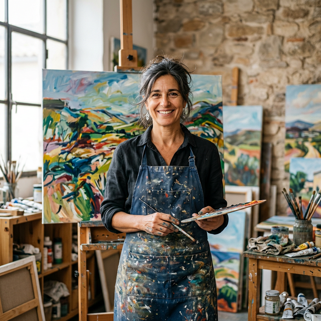
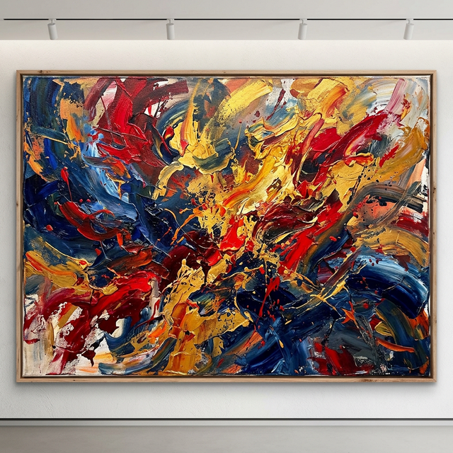

Elena Valerdi
Pintura AbstractaMaestra del color y la textura, sus lienzos exploran la dualidad entre el caos y la armonía.


Marco Rosetti
Escultura ModernaDesafía la gravedad con estructuras de mármol y acero que parecen flotar en el espacio.


Sofia Ganz
Arte Fractal DigitalUtiliza algoritmos para crear paisajes matemáticos de una belleza hipnótica y futurista.


Julián Mármol
Fotografía MinimalistaCaptura la esencia de la arquitectura a través de sombras geométricas y contrastes puros.


Beatriz Luna
Fotografía AnalógicaExploradora de la nostalgia, sus fotos detienen el tiempo en las calles y rostros del mundo.


Santi Aura
Arte Generativo (IA)Colabora con algoritmos para materializar mundos oníricos y realidades alternativas.